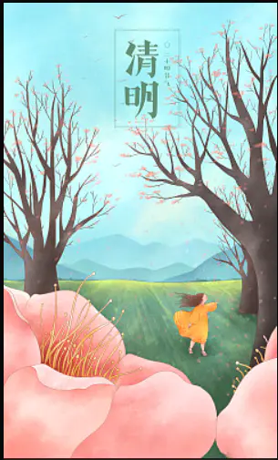

作词：邓澄、三石、彭圆圆
作曲：二白、刘涛
编曲：谭侃侃
制作人：刘涛、谭侃侃
吉他：谭侃侃
钢琴：谭侃侃
混音师：李水泽宁
母带后期混音师：李水泽宁
和声：夏初安
和声编写：夏初安
配唱制作人：谭侃侃
录音师：谭笑聪
人声编辑：谭侃侃
视觉设计：kidult.
监制：陶诗
推广策划：左三好
混音棚：WaterSound Studio
录音棚：好乐无荒录音棚（北京）
企划营销：好乐无荒（长沙）
制作公司：好乐无荒（北京）
OP：好乐无荒
SP：索尼音乐版权代理（北京）有限公司
（本作品声明：著作权权利保留 未经许可 不得使用）
愿晚风心里吹 吹散我的泪
似风筝把你追
愿等你一辈子 真情留住你
梦里归家那一扇灯
心中所属唯独你
不管天似海深
今生再没遗憾
即使分开仍念记
伤心得你恻隐
温馨我这半生
若某天 风花雪月似金
我倾心 只等你回来时贴近
俗世间 江山雨落无尽放任
与沧海 未尽缘分
愿晚风将我吹 吹进你心内
晚灯映花正开
月映照伤我心 痴情难自禁
夜半莺歌叹息我孤身
愿晚风心里吹 吹散我的泪
似风筝把你追
愿等你一辈子 真情留住你
梦里归家那一扇灯
心中所属唯独你
不管分隔千里
痴心也在原地
旧日片段曾属你
紧紧拥抱不弃
终于再没逃避
若某天 风花雪月如泪
我等你 悲欢过后 如愿再聚
俗世间 江山雨落 无尽唏嘘
与沧海 一生回味
愿晚风将我吹 吹进你心内
晚灯映花正开
月映照伤我心 痴情难自禁
夜半莺歌叹息我孤身
愿晚风心里吹 吹散我的泪
似风筝把你追
愿等你一辈子 真情留住你
梦里归家那一扇灯
愿等你一辈子 真情留住你
梦里归家那一扇灯
